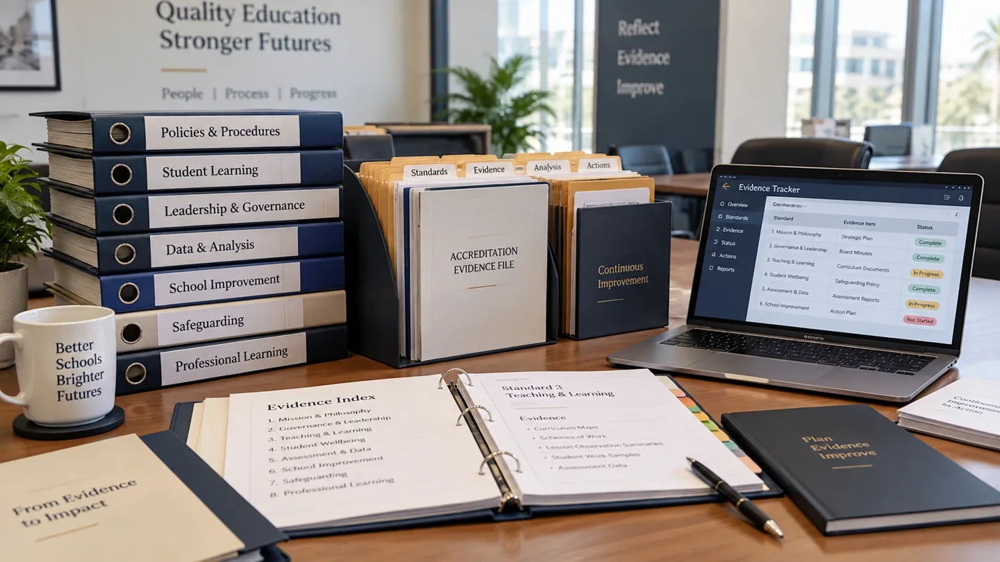

استراتيجية الاعتماد
متى تحتاج المدرسة فعلاً إلى اعتماد ثانٍ؟
قرار قيادي حول المكانة، وتكلفة الازدواجية، والجاهزية، والقيمة المؤسسية.
اقرأ الرؤيةمعرفة تنفيذية لملاك المدارس والقيادات الذين يبحثون عن وضوح مؤسسي عملي لا عن تعليق تربوي عام.
رؤى على مستوى مجالس الإدارة حول الاعتماد والجودة المؤسسية والمناهج والتحسين المدرسي.
قرار قيادي حول المكانة، وتكلفة الازدواجية، والجاهزية، والقيمة المؤسسية.
اقرأ الرؤية
لماذا لا تكفي السياسة المكتوبة وحدها، وما الذي ينبغي للقيادة أن تتوقعه بعدها.
اقرأ الرؤيةنظرة محايدة إلى بنية المعايير والتقييم الذاتي والأدلة وأساليب المراجعة.
اقرأ الرؤيةموجزات مختصرة تحول أسئلة الجودة المعقدة إلى قرارات قيادية عملية.
وزّع مسؤولية الأدلة ونظّم وتيرة الدراسة الذاتية ليخدم الاعتماد التحسين دون إنهاك الموظفين.
اقرأ ←
ما الذي يبحث عنه مجلس الإدارة في ملف الأدلة: نتائج موثوقة وفجوات جوهرية ومسؤوليات واضحة وقرارات محددة.
اقرأ ←حوّل نتائج المراجعة إلى إجراءات محددة المسؤولية وتقدم قابل للقياس ودورة متابعة تستطيع القيادة الحفاظ عليها.
اقرأ ←ربط المعايير مجرد بداية؛ تحقّق من ترابط التعلم المخطط والمنفذ والمقوّم في الممارسة الفعلية.
اقرأ ←اختبر الأدلة وراجع التقديرات المطمئنة واستخدم نتائج التقييم الذاتي لتطوير القرارات القيادية.
اقرأ ←سنتناول في جلساتنا المهنية موضوعات تحسين المدارس والمناهج والقيادة. لن ننشر تفاصيل تسجيلات إلا لجلسات أُقيمت بالفعل؛ ولا يوجد تسجيل مفتوح لفعالية مباشرة حالياً.
اختر المسار الذي تستعد له مدرستك.
موارد مستقلة من فالورن · ملفات PDF باللغة الإنجليزية